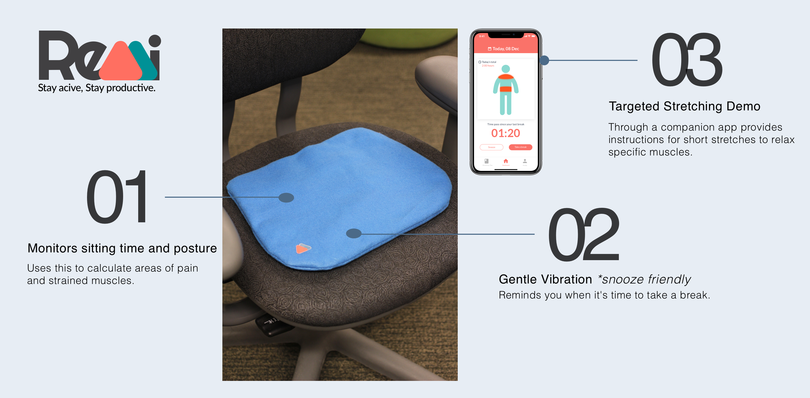
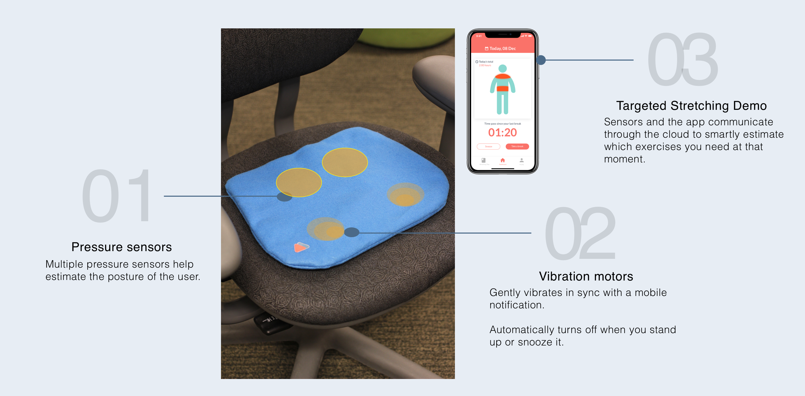
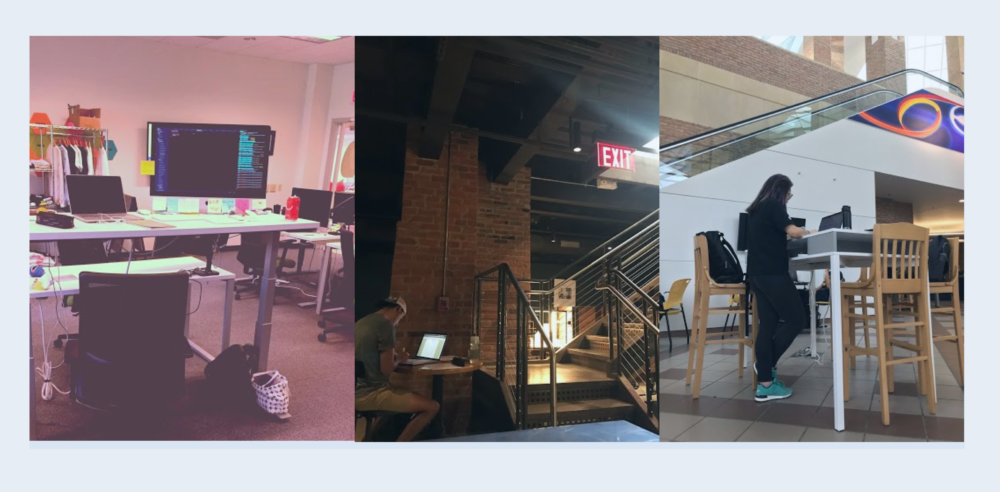
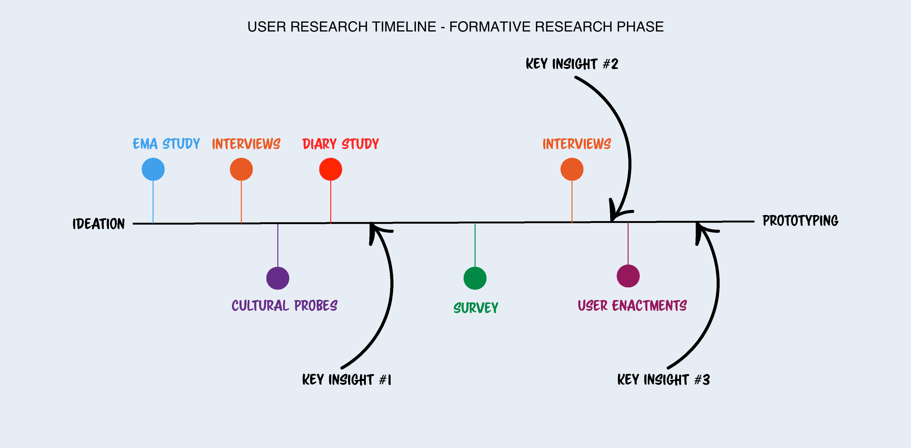
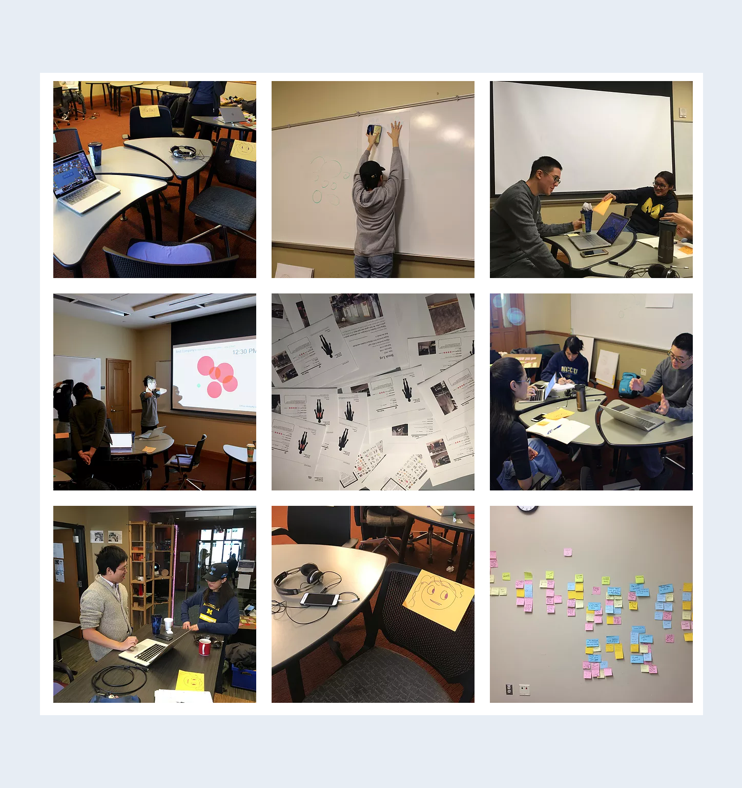
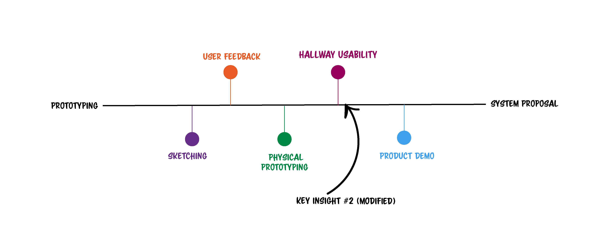
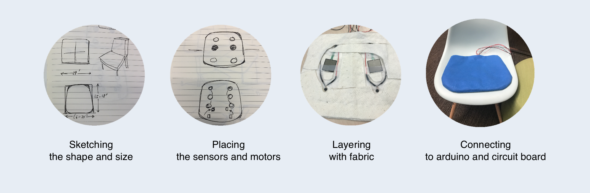

Project Type
Group Pervasive Design Project
Role
Product Designer and Researcher
Duration
September to December 2018
Skills
Secondary Analysis, semi-structured interviews, Diary Studies, Cultural Probes, User Enactments, Physical Prototyping.
Challenge
How can we tackle office syndrome with pervasive design in the workplace?
Motivation to create a product like Remi sprouted from the team's own habit of working for hours without taking any breaks.
Why?
"Too much time spent in a chair could shorten our lives, even if we exercise, according to a study that uses objective measures to find the links between lengthy sitting time and death among middle-aged and older adults." - The New York Times
Through formative research we narrowed down our problem focus and target users (university students and young professionals). Over the semester, we explored how through pervasive design we could create a product to encourage people to take quick physical activity breaks during long hours of work.
Solution
How can we approach this challenge?
Remi is a smart cushion that monitors your sitting duration and posture during long hours of work. It estimates which parts of your body might need some stretching and provides you instructions through a companion app. It's light and easy to carry around too. Remi hopes to help you stay active and productive at the same time.

When it's time to take a break, Remi vibrates and sends a notification through the companion app.
After tracking your posture it provides stretching demos for specific muslces that might be sore.
Through our conversations with users we learned the importance of a "snooze" feature. Snoozing on the app will also snooze the cushion.

TL DR; Video showing key features and use cases of Remi
Motivation
Formative Research which helped us understand the challenge and audience
Observations
To observe our target audience we picked popular places in Ann Arbor where we would find our Target audience working like NCRB, gyms, cafes and study lounges , as seen in the captures below.
Secondary Research
We learned more about office syndrome and how it goes beyond our physical health affecting our mental well being.
Interviews
From our interviews we found that people like the idea of intergrating exercises in to their workplace. They often forget to get up and take a break especially around deadlines.
User Research
Exploring pervasive design with users and hybrid research methods

Each study resulted in a few new insights. By brainstorming, ideating, prototyping, and talking to our users we further modified those insights. You can view details of the process which covered four months here.


Feature Generation
Translate insights from research methods into features
We debated a lot about features like group breaks, an activity wall, and a network of products in a shared workplace. Though these features were very feasible we did not make them since the user feedback highlighted user concerns of anonymity and privacy in the workplace on multiple occasions.
Insight 1:Users WANT to take breaks during long hours of work. But they don’t always REMEMBER to do so. Most people need reminders to increase their awareness of taking breaks.
Insight 2: Users didn’t want to be disturbed too many times (by a system) while working on something important. Break reminders and activities proposed need to be flexible.
Insight 3: Social interactions are complex in a shared office space. The designed product should notify users on a personal level without disturbing others.
Prototyping Remi
Making our ideas with waste cloth and Arduino
We prototyped Remi using Arduino, pressure sensors, vibration motors, fabric, and a woodbox hiding the breadboard under the chair. The final prototyped was created in phases with a simple version which we tested with users and iterated on using feedback received from hallway usability tests.
Reflection
Takeaways from a pervasive design project

I explored pervasive product design for the first time through the creation of Remi.
This process introduced me to experience prototyping and the complexity of user testing for furturistic products.
As a team we were very happy with our progress and as we were creating the video we discovered more alarming statistics on sedentary behavior. So remember to stay active and productive!